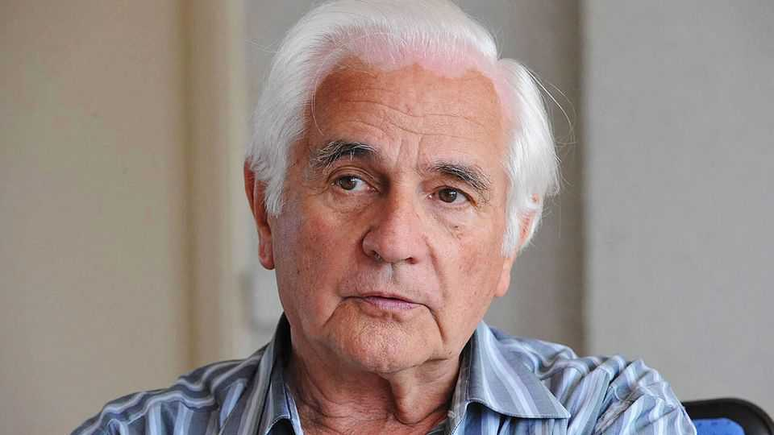

Stanislas Hutin knew he must not stay silent
The exposer of French war crimes in Algeria died on September 2nd, aged 95

Oct 1st 2026
At first he thought it was jackals he heard, on that cold January night. But the cries went on and on, and they were close, coming from the lieutenant’s tent not far away. Sometimes, shrill and terrible, they sounded like a pig having its throat slit. Surely, Stanislas Hutin thought, it could not be the boy. But it was.
The boy was one of those barefoot child-shepherds, thin and filthy as their flocks, who were a common sight in Constantine, in north-east Algeria. This one was 14, though he looked 12, and rather than meet a French army patrol he had fled for the woods. In case he was going to alert the fellaghas, the fighters for Algerian independence, he was pursued and caught. Now he was wired up by wrist and ear lobe to the magneto, the field generator. Shocks coursed through his small body.
Mr Hutin saw much else in 1955-56, when he served as a recalled reservist in Algeria. Especially vivid was the savage beating of the company’s first captive at Christmas, as if in celebration, and the curled-up prisoner afterwards, barely conscious. He recorded these things day by day, secretly, in a red notebook, and also wrote down the testimonies of his comrades. They had seen more: men strung up naked by their iron shackles, with their heads dunked and held down in a bucket of water; men interrogated with their hands bound to their feet behind their backs; the magneto applied, as it usually was, to the testicles; and the corvée de bois, “wood-chopping duty”, where a supposedly released prisoner would be felled, as he raced away, with a burst of machinegun fire.
The whole company might be called in to watch the “spectacle”, and this in itself revolted him: a gang of 19- to 20-year-old soldiers, the supposed flower of French youth, cracking crude jokes and laughing at the men they abused. Most of them, as he had travelled with them across France, had had no wish to go; “Algeria for Algerians” was the motto they scrawled on the trains. They hated being asked to stifle independence. Once deep in the country, however, hardened by fear, they learned fast to see Algerians of all sorts as the enemy and nothing more.
Of course the French army was fighting a war; one that lasted from 1954 to 1962, and which France was losing, as it had already lost Indochina. Not that it was called a war. This was a “police operation”, or “pacification" of France’s most precious colony, part of the patrimony, administered as three French departments. The political and military powers in Paris were so keen to keep it that the vilest conduct went undisclosed; not only then, but well into the 21st century. Yet in 1957 Mr Hutin had already published “Des rappelés témoignent” (Reservists Bear Witness), and several famous writers had added their voices to his. He had also detailed the abuse in long letters to his family. He freed himself from trauma by telling that story, and he told it for the rest of his life.
From the start he had been an oddity in the army, a Jesuit seminarian with real doubts about whether he should do his compulsory military service. Perhaps he should refuse on principle. But he came from a family of journalists, and when he asked his father, the founder of the newspaper Ouest-France, for advice, it was definite: if you go, you can bear witness. So in 1954, at 24, he went to Madagascar, where he got his first taste of French colonialism on a coffee plantation where the land had been seized from peasants and the peasants, in effect, enslaved. He co-wrote a report exposing this, and his path was set.
Called back sous les drapeaux in Algeria, he deliberately refused to go on patrol or fight, like his comrades. He was meant to be a machine-gunner, but never fired one; his role was more on the pacification side, re-establishing a school that the fellaghas had destroyed. In a windowless building where the only light, summer or freezing winter, came through the open door, he taught around 50 grubby, ragged ten-year-olds the basics of sums and Algerian history. He did not deal much with French history, though a picture he showed them from the Nazi occupation of brave maquis about to ambush a German troop lorry reminded him forcefully of the other war he had lived through. His father had been in the Resistance and arrested. If these children’s fathers were fellaghas, what was the difference between them and him?
His lieutenant, a brute and a sadist, called him a communist. His comrades considered him a priest already, who would obviously be soft on prisoners as he was, taking them bread at night and chatting to them. He fraternised with village men too, not least to persuade them to send their children to school, and squatted with them to drink coffee in their long jobless days. He carried no visible arms, though his lieutenant insisted that a helmeted soldier went with him to school and that he had an automatic pistol in his pocket. Originally he was told to prop a rifle by the blackboard. Who could possibly teach like that?
It was a short stint, yet it marked him so deeply that when he returned the priesthood no longer drew him. He had to make restitution for the crimes he had witnessed. For decades he immersed himself in development projects in Africa, especially in Algeria. In 2004 he immediately joined a new group, The Association of Former Conscripts in Algeria and Their Friends Against the War, a gathering of veterans who gave their war pensions, around 800 euros monthly, to help 24 NGOs operating there.
He had also brought back photographs from the Algerian war. Some were of his pupils, some of prisoners after beatings. One became the face of the conflict, reproduced on the critical histories that eventually followed. It was a portrait of the 14-year-old shepherd, Said Boutout, whose screams he had heard in the night. It was taken the next day, under a blue sky. The boy, with curly hair and a ripped sweater, did not look distressed. He was a tough kid. Rather, he looked puzzled; perplexed, perhaps, by the barbarity of men who called themselves more civilised than he was. ■